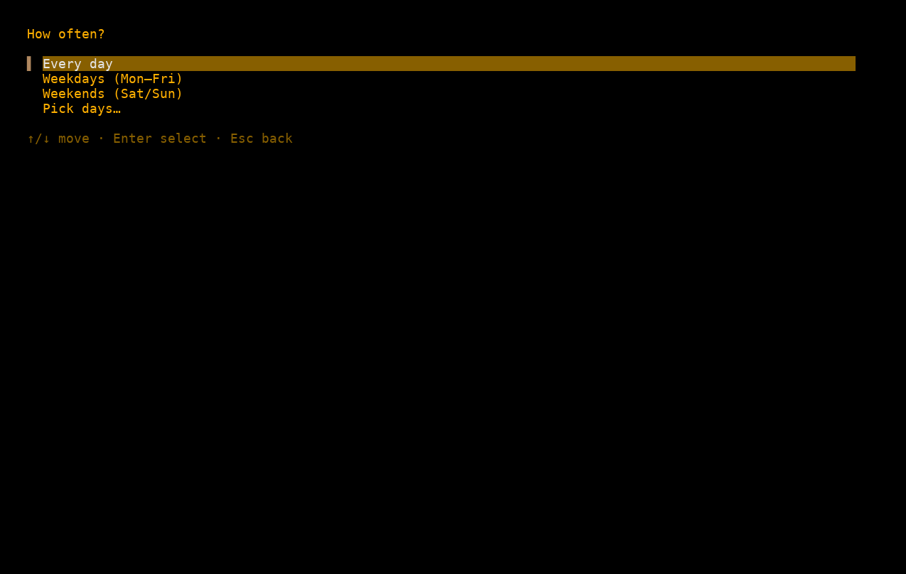
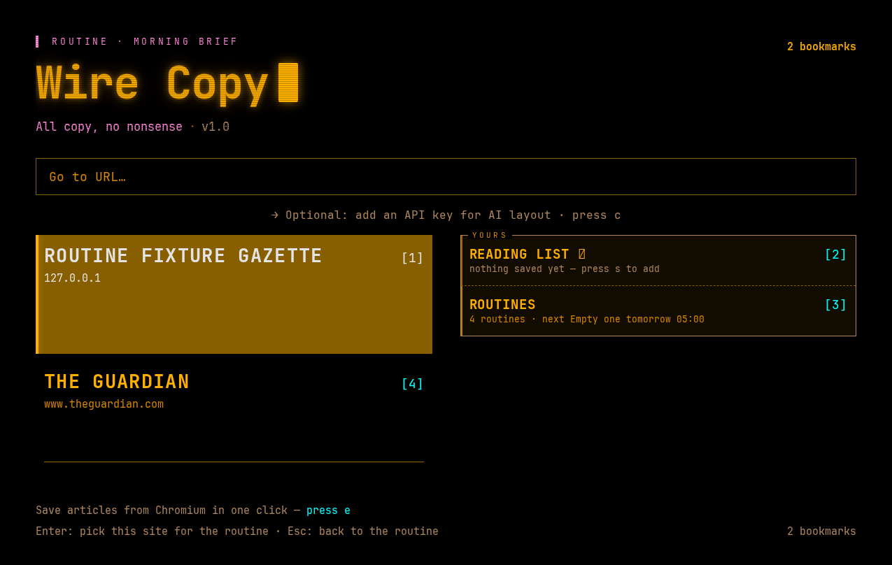
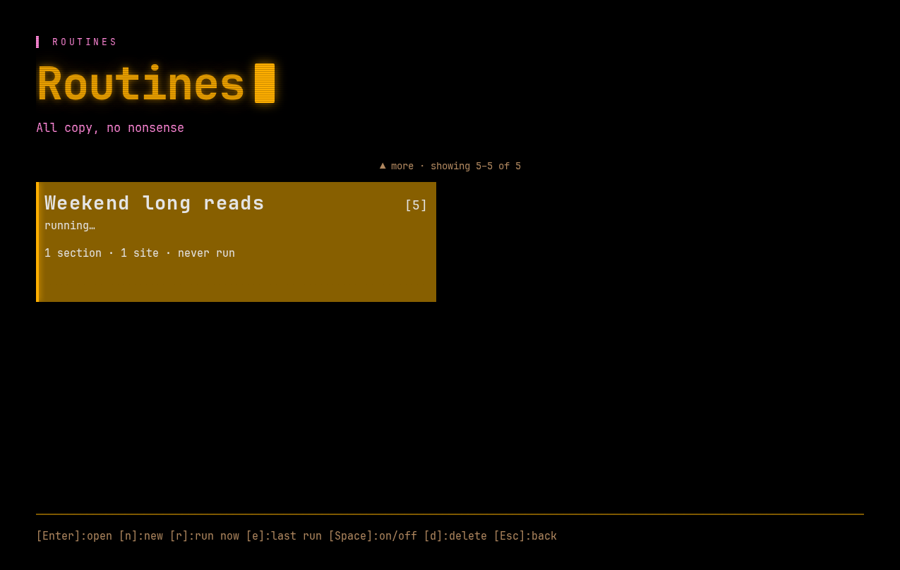
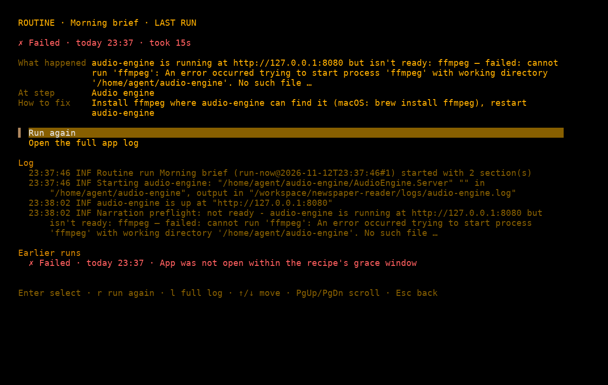
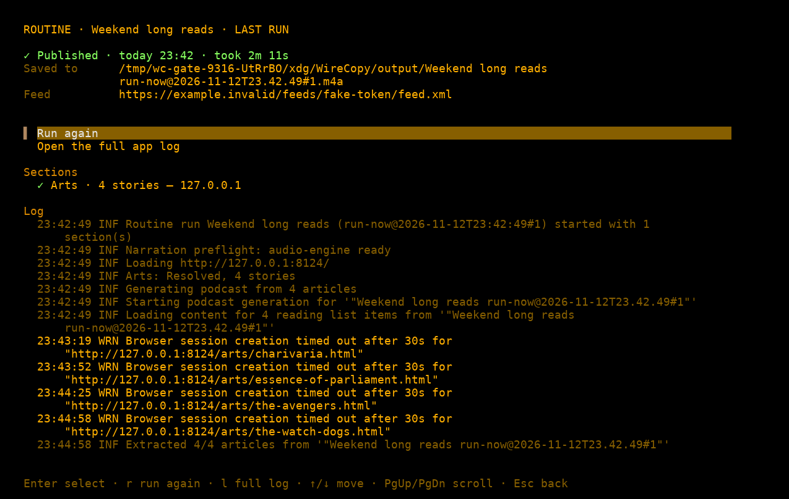

Routines UX review
Routines work, but they are built from two different apps. The home, the site picker and the story picker are designed panes. The editor, the schedule cards, run details and every confirm are raw terminal text in the top-left corner of an empty window. Making one routine crosses that line three times and ends in the terminal. The plan puts every routines screen on the designed surface, shortens the path, and makes a run something you can watch, stop and listen to.
Every screenshot below is the real app, driven with real keys on 12 Nov 2026. The proposed screens are mocks built from the app’s own tokens.
Today: making one routine










g s on a story list. The designed story pane is swapped for the raw terminal list so a small card can draw.What is wrong
Look
- L1Two visual languages in one task. Editor, schedule cards, run details and confirms leave the pane and draw 18px terminal text.RoutineEditorHandler.cs:58 · RoutineRunDetailsHandler.cs:69 · RoutineEditorCards.cs:100
- L2Three footer formats:
[Enter]:openon home,Enter edit · x removein the editor,↑/↓ move · Enter selecton cards. Only the launcher colours its keys. - L3Two selection styles on the editor: settings rows light a bullet, content rows get a bar that stops short of the right edge.
- L4Home shows the launcher tagline under “Routines” and says nothing about what runs next.launcher.html:91 falls back to “All copy, no nonsense”
- L5The empty home is one card in a void. With routines, the window holds four cards and pages the rest.
- L6No wayfinding. Each screen invents its own heading, so depth is never visible.
- L7Add a site is the full launcher in amber, titled “Wire Copy”, with setup hints and two tiles that are not sites.RoutineSitePicker.cs:129 paints RenderLauncher
- L8Every confirm blanks the screen and draws a small red box, so you lose sight of what you are removing.
Flow
- W1Up to eleven screens to make and run one routine. Frequency alone is up to three.
- W2“+ New routine” saves an empty routine before it is named. Backing out leaves “New routine” behind, due daily at 05:00.RoutinesHomeHandler.cs:219-221
- W3
rdoes three different things. Home: background, the card says “running…”. Editor: the whole screen stops taking keys until the run ends. Details: background. No progress anywhere, and no run can be cancelled.RoutineEditorHandler.cs:296 · every caller passes CancellationToken.None - W4The schedule is a promise the app does not keep. A routine runs only if Wire Copy is open in the minute it is due. Otherwise the run is recorded as “skipped”, which raises no alert. The default time is 05:00. The card still says “next tomorrow 05:00”. Seen live: opening the app at 23:37 logged “Failed · App was not open within the recipe’s grace window” for the 07:00 slot.NextDueCalculator.cs:35 · SchedulerHostedService.cs:183-193
- W5A good run is a dead end. “Saved to” and “Feed” are plain text. No play, no copy feed URL, no show file.RoutineRunDetailsHandler.cs:200-221
- W6Earlier runs are listed but cannot be opened.RoutineRunDetailsHandler.cs:446-455
- W7Sections cannot be reordered, though the model supports it. Story count can only be changed by reopening the site.
- W8Home is alphabetical with “+ New routine” always first, so
1and the first Enter create instead of open. - W9A run started by hand names its episode with an internal key: “Weekend long reads run-now@2026-11-12T23.42.49#1”. That is what a podcast app shows.
Keys
- K1Remove is
don home andxin the editor. Elsewherexcancels a run. - K2
eopens the last run. It has no mnemonic and exists because Enter does not lead there. - K3Run details advertises keys that do not apply: a routine that never ran offers “r run again · l full log”.
- K4
g son a link list opens its chooser as a terminal card that hides the story pane behind it. - K5
?does nothing on the Routines home. The launcher next door advertises it.
Proposed: one surface, one path
Every routines screen is drawn by the launcher pane, in the launcher’s type and card language, in amber. The terminal keeps all keys and logic, as it does for the launcher today. A breadcrumb replaces the ad-hoc headings. One footer format, keys in cyan.
Routines home. A summary line where the tagline was. Each card carries its state as a pill. Next-to-run first, off last, “+ New routine” at the end. A running card shows progress. A failed card says why, and Enter goes to the fix.
Routine page (replaces the editor). What it reads on the left, when it runs and how it last went on the right. Arrows move within a column and across. Enter on a section reopens the story picker; Enter on a panel edits it in place.
Enter save · Esc cancel
Schedule, edited in place. One panel instead of three screens. Presets, day toggles and the time are all visible at once.
Run view, running. r opens this from home, the routine page or a finished run. Stages tick as they finish. x cancels, Esc leaves it running, the same grammar as the podcast screen.
Run view, finished. The reason is the headline and the fix is the first row. A good run leads with Play episode, Copy feed URL and Show file. Earlier runs open. The footer lists only keys that apply.
Empty home. Says what a routine is and what the three steps are. Nothing is saved until the routine has a name.
The plan
Each slice is a bead under the epic. Each is closed by driving the real shell under a virtual display, doing what a user does, and reading the screenshots. The atlas probe re-shoots every routines screen for before and after.
| Slice | What changes | Fixes | Closed when |
|---|---|---|---|
| R0g5xz3 | Screen atlas probeSeeds four routines, walks every routines screen, shoots each. | — | Done. 62 shots, all read; the before shots above come from it. |
| R16ifpp.1 | Routine page in the paneReplaces the terminal editor. Breadcrumb, two columns, one selection style, shared key-hint footer, in-pane confirm, sites by name. Same state drives a plain-terminal fallback. | L1 L2 L3 L6 L8 W7 K1 | Open a routine, move through both columns, rename, remove and reorder a section; each visible in the pane shot. |
| R26ifpp.2 | Schedule edited in placePresets, day toggles and time in one panel. The three card screens go. | W1 | Change weekdays 07:00 to Sat+Sun 09:30 without leaving the page; card and page show the new next run. |
| R36ifpp.3 | Run view: watch, stop, listenStep-level progress and cancellation in the run pipeline. r behaves the same everywhere. Result actions. Earlier runs open. Episodes titled by date. | W3 W5 W6 W9 K2 K3 | Run with the fake engine: stages tick, x stops it, Esc leaves it running and the home card shows progress; a finished run plays and copies its feed URL. |
| R46ifpp.4 | Home that reportsSummary line, state pills, next-to-run order, “+ New” last, tighter cards, real empty state. | L4 L5 W8 | Atlas home shots with 0 and 4 routines match the mocks; Enter on a failed card lands on its fix. |
| R56ifpp.5 | Create without leftoversName in place, nothing saved until named, then straight to an Add a site screen that shows only sites. | L7 W1 W2 | Esc at the name leaves no routine; a full create is five screens, all pane. |
| R66ifpp.6 | Missed runs catch upA slot missed while the app was closed runs at next open, once, same day. Copy says so. A miss that could not be caught up is flagged. | W4 | Start the app after a due slot: the run starts, and the card reads “ran late”. |
| R76ifpp.7 | Keys, help, g sd removes everywhere, x cancels a run, ? lists the keys of the screen you are on. The g s chooser draws in the story pane. | K1 K4 K5 | ? on each routines screen lists that screen’s keys; g s chooser visible over the stories. |
Order: R1 with R6 alongside (no shared files), then R2, R3, R4, R5, R7. R1 fixes the pane contract the rest build on. Beads live under epic workspace-6ifpp.
One call that is yours: R6 makes a run that was missed while the app was closed start when you next open it. Today it is silently skipped. If you would rather keep skipping, R6 ships only the honest wording and a “missed” flag.